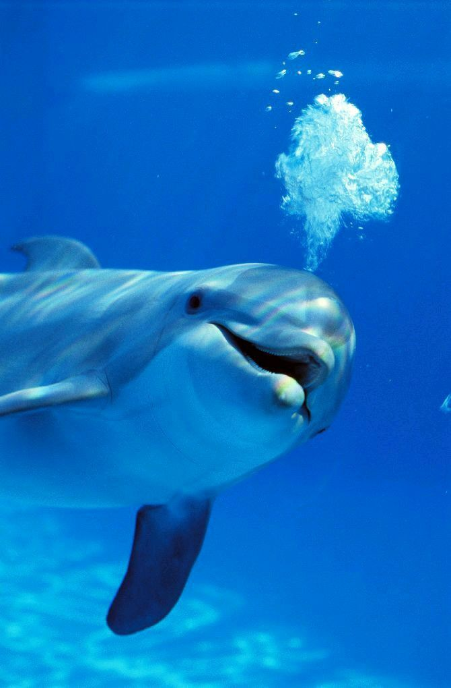
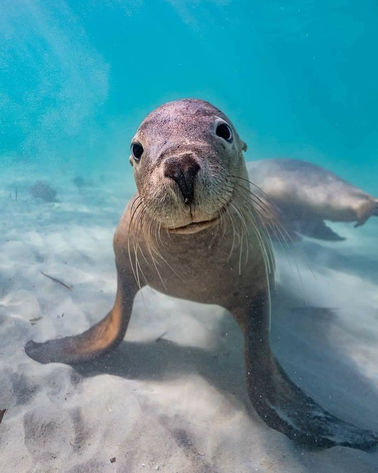
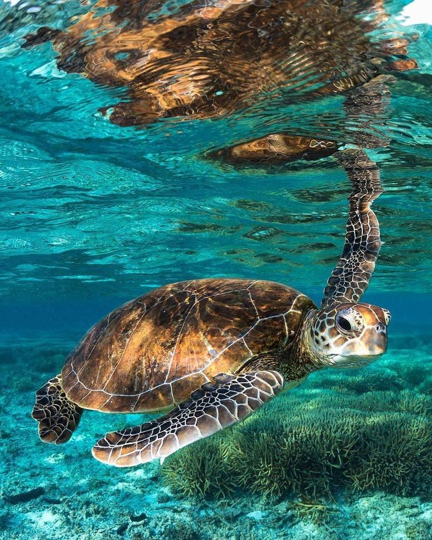

Explora un MAR de posibilidades gracias a estos MARavillosos animales!
Los océanos y mares son ecosistemas con gran variedad de animales como delfines, leones marinos y tortugas.

Delfín

León Marino

Tortuga